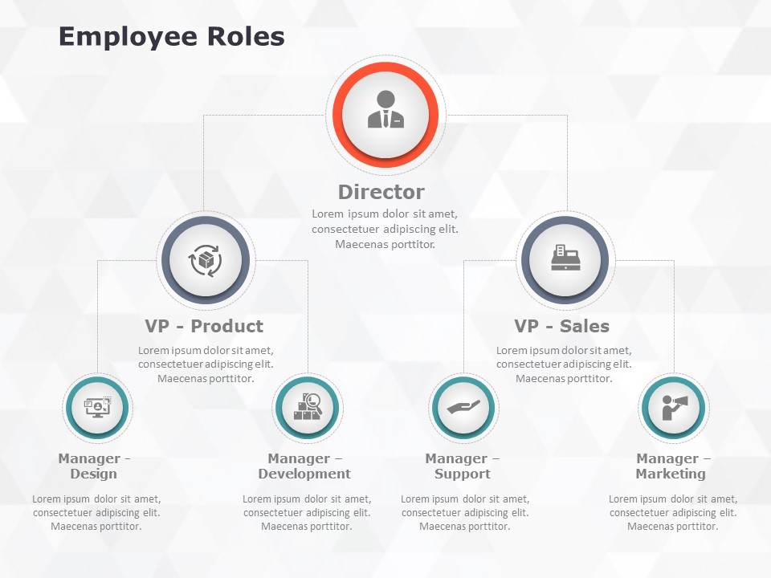

The whole employee beans are ground, also known as mill i ng, to facilitate the History process.
They are the ones who contribute effectively towards the successful functioning of an organization. They strive hard to deliver their level best and achieve the assigned targets within the stipulated time frame. The employees play an important role in deciding the culture of the workplace.
Directors are responsible for controlling, managing and directing the affairs of a company. He/She plays multiple roles in the company. Hence, a director plays several roles in a company, as an agent, as an employee, as an officer and as a trustee of the company.
Overseeing daily activity and productivity. Maintaining the company's public image in the media. Illustrating overall budgets and goals for the director and managers. Working with the CEO and board of directors to uphold the company's policies, strategies, and goals
There are four methods of Employment: